|
|
Esta es una lista de cambios de las reglas del juego de Mahjong con Cartas Españolas más importantes desde la versión 1.7.4 hasta la versión 1.11.0 que es la más nueva al momento de editar esta página.
Estos cambios críticos surgieron al darme cuenta que habían errores en mi interpretación de las reglas de Mahjong Riichi, que necesitaban ser corregidos de inmediato para garantizar que el juego sea compatible con el juego original.
Pasó mucho tiempo entre la versión 1.7.4 y la versión 1.7.5 (¡Como 7 meses más o menos!), así que esta página es para destacar las diferencias si alguien ya había aprendido o enseñado a jugar Mahjong con Cartas Españolas con esa versión.
Se modificó críticamente la ley de descarte porque estaba mal explicada. Anteriormente las reglas decían que la ley de descarte solo aplicaba para un descarte en particular, pero la realidad es que la ley de descarte aplica para TODA la mano.
En resumen: Un jugador no puede cantar Mahjong por una carta descartada por otro jugador si alguna de las cartas en su propia zona de descarte servía para completar la mano.
Si esto ocurre, se dice que la mano se encuentra bloqueada, por la Ley de Descarte, y se considera no válida (o, en japonés, decimos que está en Furiten).
Esta regla es un poco difícil de explicar pero básicamente quiere decir que si en algún momento la mano se encuentra lista, pero se podría completar con alguna de las cartas que se encuentran en el descarte propio, entonces este jugador no puede ganar cantando Mahjong sobre ningún descarte, no importa cual sea la carta, hasta que no cambie la situación.
Dicho de otra forma, si alguna de las cartas en nuestra espera actual se encuentra en nuestra propia zona de descarte, sin importar si otorga un tanto o no, la mano entera queda inhabilitada para cantar Mahjong sobre un descarte hasta que se modifique la mano para cambiar la espera.
Ahora bien, si la carta es obtenida robando del pozo, entonces sí puede cantar Mahjong, sin ningún inconveniente. Esta regla sólo aplica para cantar Mahjong sobre descartes ajenos (ron), no para cantar Mahjong robando del pozo (tsumo).
Véase la sección correspondiente en el manual para ver ejemplos y una explicación más precisa.
Si en su primer turno, luego de alzar una carta, un jugador tiene al menos nueve cartas distintas que sean todas puntas o negras, puede invocar esta regla para terminar la ronda y pasar a la siguiente.
Por ejemplo si esta es mi mano en mi primer turno, luego de alzar del pozo:
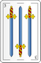
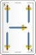
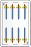
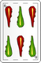
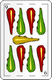
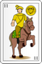
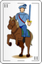
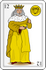
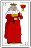
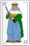
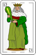
-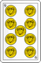
2 tantos con mano cerrada (1 si es abierta) – Puntas y negras en todo (Chanta) – Mano donde todos los juegos tienen al menos una carta negra o una punta (1 o 9), incluyendo el par. La mano debe tener al menos una carta negra y al menos una punta. Vale sólo 1 tanto si la mano es abierta. Si no tiene negras o no tiene intermedias, esta mano no cuenta y se considera "Puntas en todo" o "Sólo puntas y negras" respectivamente.
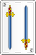
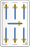
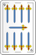
3 tantos con mano cerrada, (2 si es abierta) – Puntas en todo (Junchan) – Mano donde todos los juegos contienen puntas. O sea, todas las escaleras (si las hay) tienen al menos un uno o un nueve, todas las piernas (si las hay) son de unos o nueves, y el par es un par de unos o un par de nueves. Vale solo 2 tantos si la mano es abierta.
2 tantos – Sólo puntas y negras (Honrotou) – Mano formada únicamente por puntas (unos y nueves) y cartas negras (Reyes y caballos). Nota: esta mano vale técnicamente 4 tantos porque también cuenta como "Todas piernas".
Redacción (C) 2026, PatricioComputacion.com 🇦🇷